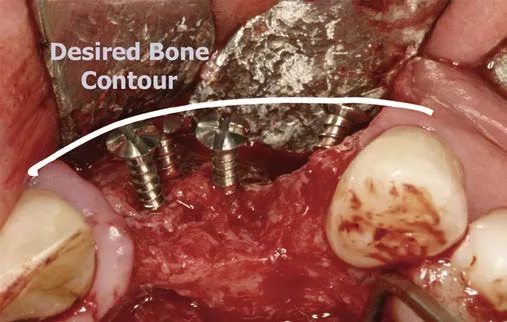
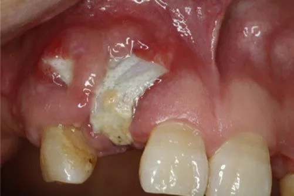

نسخه استخراجشده؛ ترجمه یا تأیید علمی انجام نشده است. وضعیت: captured
ممبران بهتنهایی فضا نمیسازد؛ فرو میریزد. برای حفظ فضا سه گزینه داری: d-PTFE یکپارچه با استرات تیتانیوم، مش تیتانیوم، و پیچهای چادری (tent screws).
تکنیک پیچ چادری: پیچها چنان در محل گیرنده لنگر میشوند که سرشان یک گنبد بسازد که ارتفاع استخوان مورد نیاز برای کاشت ایدهآل را تکرار میکند. یعنی حجم نهایی گرافت را سطح سرِ پیچها تعیین میکند، نه مقدار مادهای که میریزی.
اعداد پیچ:
• قطر شفت پیچهای تثبیت استخوان معمولاً ۱٫۵ میلیمتر است و همین قطر باریک بر پیچهای ضخیمتر ترجیح دارد.
• طول رایج پیچ چادری حدود ۶ میلیمتر است، اما برای نقصهای استخوانی بزرگتر باید انتظار ۱۰ تا ۱۲ میلیمتر را داشت.
• پیچها با فاصلهی ۳ تا ۴ میلیمتر از هم گذاشته میشوند تا میانشان استخوان محکم شکل بگیرد.
• سرِ پیچ هرگز نباید بالاتر از سطح استخوان بیندندانی مجاور قرار گیرد.
چرا سرِ پهن؟ چون وظیفهی اصلی پیچ، نگهداشتن ممبران در تمام دورهی بلوغ استخوان است. سر باریک زیر کشش، راهش را از میان ممبران باز میکند، ممبران را سوراخ میکند و پشتیبانی عمودی از بین میرود؛ آنوقت گرافت ذرهای در معرض فشار و میکروموومنت قرار میگیرد. سر باید پهن و صاف باشد تا سطح کافی برای ممبران بدهد و مخاط رویی را نساید. در پیچهای سرپهن باکال، لبهی فوقانی را کمی زاویه بده تا لبهی تیزش ممبران را سوراخ نکند.
عدد کلیدی میکروموومنت: برآورد شده که ۲۵ میکرومتر حرکت روی محل گرافت میتواند حجم نهایی گرافت را تا ۴۰ درصد کاهش دهد. تمام این تثبیتها برای همین عدد است.
سه لایهی پیوند:
لایهی ۱ — اتوژن، مستقیماً روی استخوان میزبان. اندیکاسیون: رشد بیش از ۳ میلیمتر. بلوک کورتیکال باید کاملاً به ذرات ۱ تا ۲ میلیمتری خرد شود — نه درشتتر، و نه آنقدر آسیابشده که پودر شود؛ سطح تماس ذرات ریز بهمراتب بیشتر از یک بلوک ثابتشده است.
لایهی ۲ — آلوگرفت روی اتوژن، در گرافتهای بزرگتر از ۳ میلیمتر؛ برای گرافتهای کمتر از ۳ میلیمتر میتواند تنها ماده باشد. نوع پیشنهادی: ۷۰٪ مینرالیزه / ۳۰٪ دمینرالیزه یا مخلوط کورتیکال-کنسلوس مینرالیزه. آلوگرفت باید روی سر پیچها را بپوشاند، ولی محل نباید بیشازحد پر شود.
لایهی ۳ — کشیدن ممبران روی گرافت و در نهایت کاشت ایمپلنت.
اندازهی ذرهی آلوگرفت: ایدهآل ۲۵۰ تا ۱۰۰۰ میکرومتر. کمتر از ۱۲۵ میکرومتر خیلی سریع جذب میشود و استخوانسازی بیثبات میدهد؛ بیش از ۱۰۰۰ میکرومتر جذب را محدود میکند و ممکن است سکستر شود یا ترمیم را به تأخیر بیندازد. ذرات باید متراکم بستهبندی شوند تا فضای هوایی که پناهگاه باکتری است باقی نماند.

یک اشتباه رایج تازهکارها این است: استفاده از یک «زمان ترمیم ثابت» برای همهی گرافتهای ذرهای. زمان ترمیم تابع اندازه، ترکیب و محل گرافت است.
• گرافت کاملاً آلوگرفت با حجم کمتر از ۴ میلیمتر: ۶ تا ۸ ماه.
• همان نوع با حجم بیش از ۴ میلیمتر: ۶ تا ۱۰ ماه و بهشدت توصیهشده.
• ساختار پشتیبان (پیچ استخوانی، ممبران تیتانیومدار) باید دستکم ۵ ماه حفظ شود.
• ممبرانهای غیرقابلجذب دستکم ۶ هفته نگه داشته میشوند، مگر محل عفونی شود.
چرا زود ورود کردن خطرناک است؟ چون این کل فرآیند یک «جایگزینی» است: استخوان پیوندی باید جذب شود و استخوان تازه جای آن ساخته شود. سلولهای استئوپروژنیتور میزبان ظرف ۷ روز وارد گرافت میشوند و جذب و رسوب از راه جایگزینی خزنده و استئوکانداکشن پیش میرود.
اگر ایمپلنت را پیش از کاملشدن چرخهی جایگزینی بگذاری — بهویژه با ذرات بوواین که چرخهی کندی دارند و در پروتکلهای GBR بهندرت به کار میروند — تراکم نهایی آسیب میبیند. بدان که ورود زودهنگام به گرافت، عوارض متعددی را آغاز میکند.
محافظت از محل در دورهی ترمیم: بهترین حالت بریج موقت باندشدهی ثابت است، چون تماس با محل گرافت را کاملاً حذف میکند. اگر بیمار حتماً پروتز متحرک میخواهد: تمام فلنج باکال برداشته شود، تکیهگاه روی سطوح لینگوال دندانهای مجاور ساخته شود و از رستِ اکلوزال استفاده شود تا نیرو به نواحی دور از گرافت منتقل گردد.
باز شدن خط برش — یکی از شایعترین عوارض جراحی در ابتدای منحنی یادگیری است. دو آسیب میزند: گرافت در معرض میکروفلور دهان قرار میگیرد، و ممبران در معرض تخریب و در نتیجه ورود بافت فیبروز به گرافت.
وقتی باز شد چه نباید کرد: یک قاعدهی قطعی: نباید دوباره بخیه زد — بافت لبههای در حال ترمیم در آن مقطع فشار بخیهی تحت کشش را تحمل نمیکند.
و چه باید کرد: پروتکل شستوشوی کلرهگزیدین تا کاملشدن گرانولاسیون، پایش مکرر وضعیت ماده و سختافزار گرافت، و در صورت ترشح چرکی یا بدحالی عمومی، شروع فوری آنتیبیوتیک.
نکتهی مهم و ضدشهودی: در d-PTFE، اکسپوژر موضعی همیشه به معنای شکست گرافت نیست. اگر بتوان ممبران را دستکم ۶ هفته نگه داشت، برداشتن آن در آن زمان یا بعدتر اغلب با شکلگیری ریج استخوانی معقول همراه است. قاعدهی کلی: هر اکسپوژری باید تا حد ممکن طولانی حفظ شود — مگر عفونت پیشرفت کند که در آن صورت ممبران باید پیش از بدترشدن اوضاع خارج شود.
اکسپوژر سرِ پیچ ماجرای دیگری است: وقتی ممبران جذب میشود و گرافت ترمیم مییابد، دیدهشدن سر پیچ از زیر مخاط نازک «عارضه نیست و درمان خاصی نمیخواهد».
اما اگر خودِ سر از بافت بیرون بزند، باید برداشتنش را در نظر گرفت، و تا ترمیم بافت اطراف با کلرهگزیدین نگهداری شود. توصیه میشود پیچ بیرونزده در همین مرحله برداشته شود تا مسیر آلودگی گرافت از اطراف شفت پیچ بسته شود؛ و هرگز نباید با جابهجا کردن بافت نرم، روی آن را پوشاند.

نوع سؤال: ساخت کلمه · 4 خانه
حروف منبع: ب · ن · د · گ